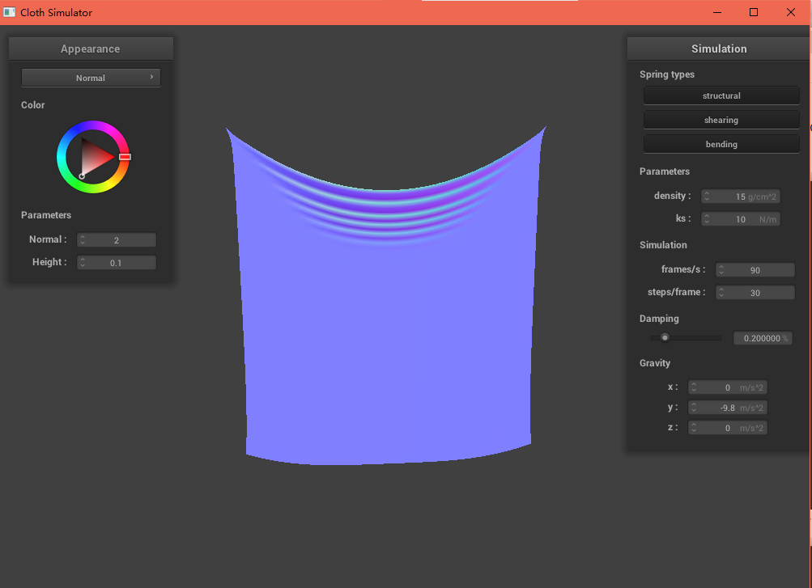
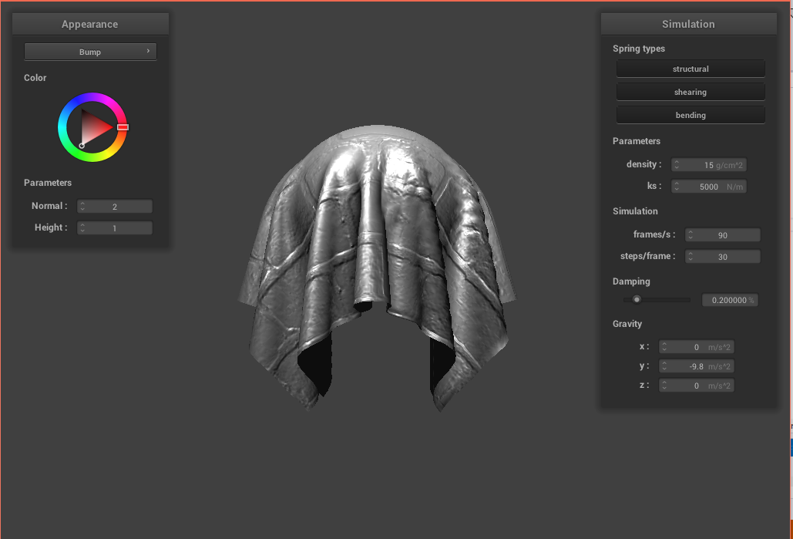
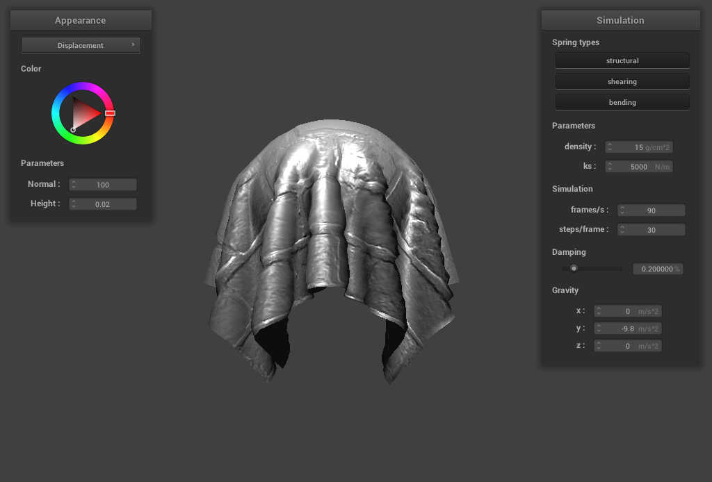
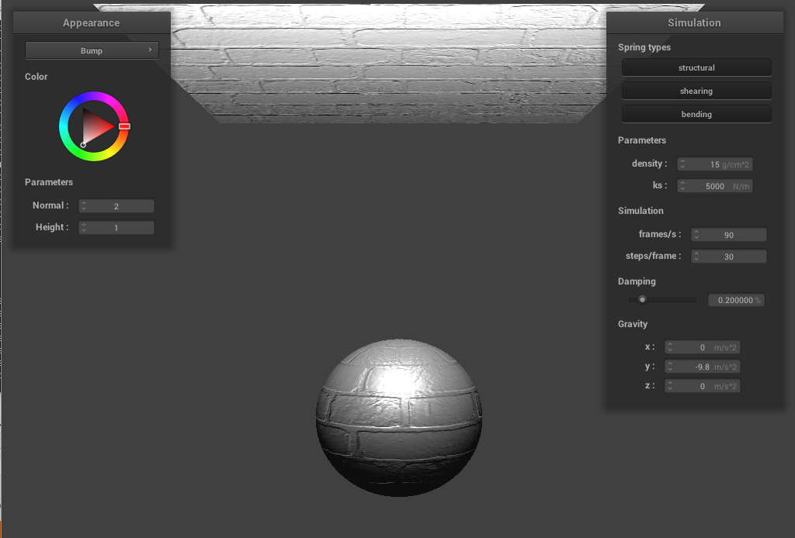
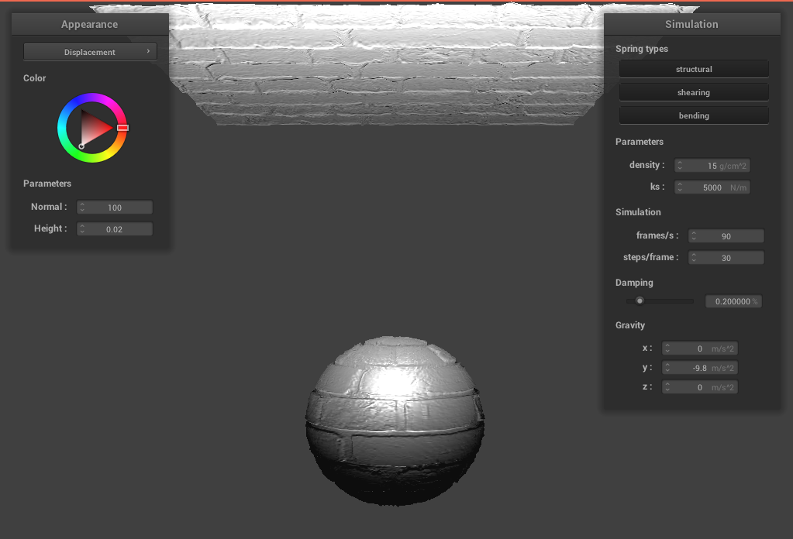

Overview
In this project I built a a real-time simulation of cloth.
The cloth was constructed by multiple types of springs and many point masses.
I implemented three types of physical constraints on the cloth,
simulatied the motion of the cloth by numerical integration,
and implemented collisions with other objects and itself.
Part 1: Masses and springs
In Part I, I built a grid of masses and springs to simulate the cloth with three or less types of constraint springs: STRUCTURAL, SHEARING, or BENDING
Take some screenshots of scene/pinned2.json from a viewing angle where you can
clearly see the cloth wireframe to show the structure of your point masses and springs.
Show us what the wireframe looks like (1) without any shearing constraints,
(2) with only shearing constraints, and (3) with all constraints.
Part 2: Simulation via numerical integration
In Part 2, I integrated physical equations of motion to apply forces on the
cloth and simulate its behaviour from one time step to the next.
Specifically, I implemented two kinds of forces:
external forces (such as gravity) and spring correction forces.
Describe the effects of changing the spring constant ks; how does the cloth behave from start to rest with a very low ks? A high ks?
With a lower ks, the cloth is stretchier and more bouncy.
With a high ks, the cloth is stiffer and less bouncy.
|

|
|
What about for density?
With a lower density, the cloth drops more rapidly and stiffly, and has more wrinkles when it is at rest.
With a high density, the cloth's mass is lighter and it drops slower with less wrinkle.
|
|
|
What about for damping?
With a lower damping value, the cloth drops faster with more energy but takes more time to reach a resting state because it keeps bouncing.
With a high damping value, the cloth drops much slower but reachs a resting state faster because it does not bounce a lot.
|
|
|
Show us a screenshot of your shaded cloth from scene/pinned4.json in its final resting state!
Part 3: Handling collisions with other objects
In Part 3, I implemented cloth collision with spheres or planes in the scene.
Show us screenshots of your shaded cloth from scene/sphere.json in its final resting state
on the sphere using the default ks = 5000 as well as with ks = 500 and ks = 50000.
Describe the differences in the results.
With a lower ks, the cloth is stretchier and softer. With a high ks, the cloth is stiffer.
|
|
|
|
Show us a screenshot of your shaded cloth lying peacefully at rest on the plane.

Part 4: Handling self-collisions
In Part 4, I implemented cloth self-collision so that when the cloth is dropping onto itselt, it will fold on itself instead of clipping through itself.
Show us at least 3 screenshots that document how your cloth falls and folds on itself, starting with an early, initial self-collision and ending with the cloth at a more restful state (even if it is still slightly bouncy on the ground).
Vary the density as well as ks and describe with words and screenshots how they affect the behavior of the cloth as it falls on itself.
With a low density, the cloth is lighter and folds on itself smoothly.
With a high density, the heavier cloth folds in a more compressed way, with much less sliding motion.
|
|
|
With a low ks, the cloth drops with less sliding motion and has a similar effect to the low-density case.
With a high ks, the cloth folds nicely and is similar to a cloth with low density.
|
|

|
Part 5: Shaders
In Part 5, I implemented Diffuse, Blinn-Phong, Texture Mapping, Bump & Displacement Map, and Mirror shaders.
Explain in your own words what is a shader program and how vertex and fragment shaders work together to create lighting and material effects.
Shader programs take in an input and output a single 4 dimensional vector as the shading effect.
Vertex shaders apply transforms to vertices, modify their geometric properties like position and normals,
and make any other necessary changes for use in the fragment shader.
Fragment shaders take in a fragment's attributes calculated by the vertex shader to compute out_color.
The output of the vertex shader is the input of the fragment shader,
so a vertex shader and a fragment shader can be compiled and linked together to build a shader program.
Explain the Blinn-Phong shading model in your own words. Show a screenshot of your Blinn-Phong shader outputting only the ambient component, a screen shot only outputting the diffuse component, a screen shot only outputting the specular component, and one using the entire Blinn-Phong model.
In Blinn-Phong shading, I added an ambient light component and an specular reflection component to the diffuse lighting.
In Blinn-Phong, the intensity is based on view direction. (Brighter near mirror reflection direction.)

|
|
|
|
|
|
|
|
|
|
|
Show a screenshot of your texture mapping shader using your own custom texture by modifying the textures in /textures/.
Show a screenshot of bump mapping on the cloth and on the sphere.
|  |
Show a screenshot of displacement mapping on the sphere. Use the same texture for both renders.
|  |
Compare the two approaches and resulting renders in your own words.
In bump mapping, I only modified the normal vectors to support the bumps effect on the objects.
In displacement mapping, I also modified the position of vertices to make the objects
consistent with the new geometry.
Compare how your two shaders react to the sphere by changing the sphere mesh's coarseness by using -o 16 -a 16 and then -o 128 -a 128.
The bump shader produces more accurate bump effects when using -o 128 -a 128
but the improvement is not that obvious.
The displacement shader performs better obviously when using -o 128 -a 128, providing a
sharper and nicer boundary on the sphere and finer overall resolution.
|
|
|
|

|
|
|
|
|
|

|
|
Show a screenshot of your mirror shader on the cloth and on the sphere.

|